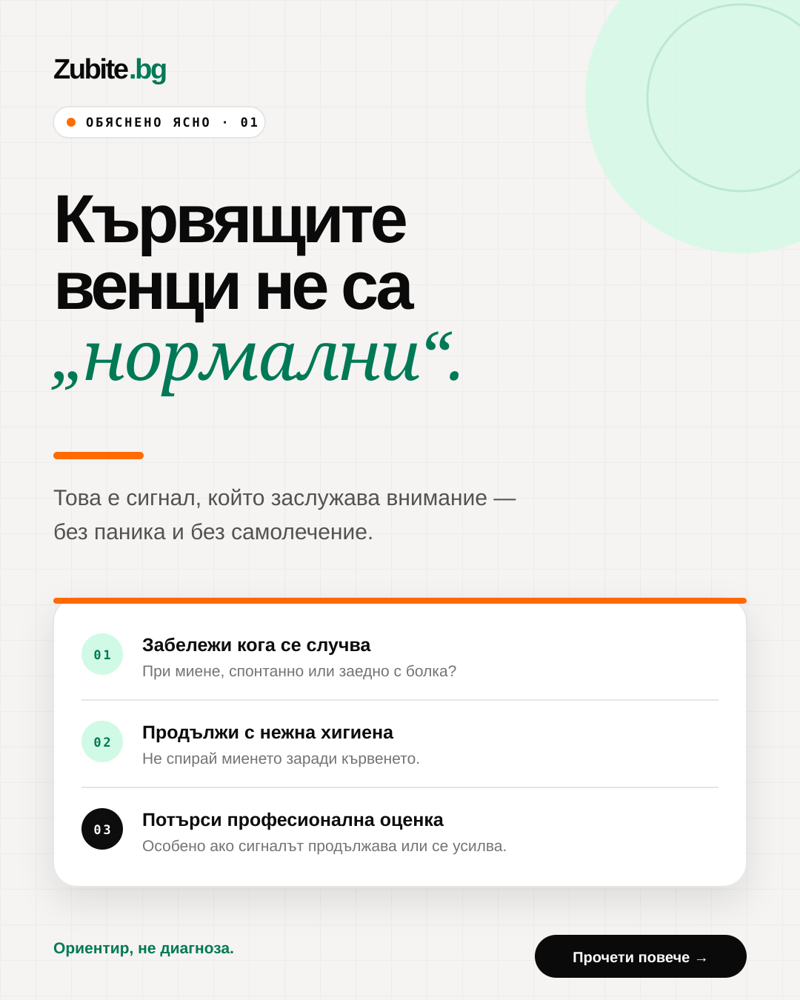
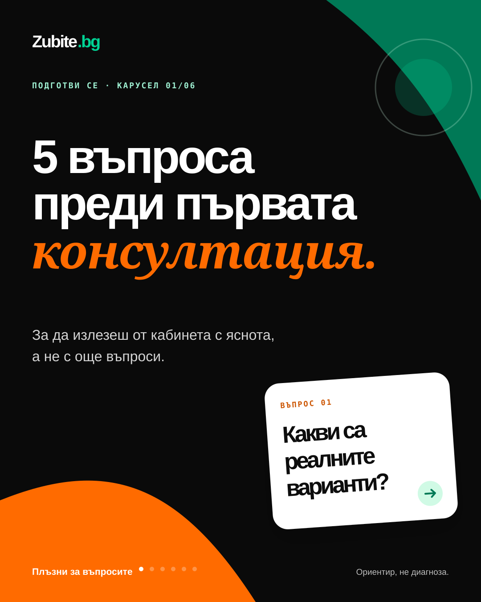
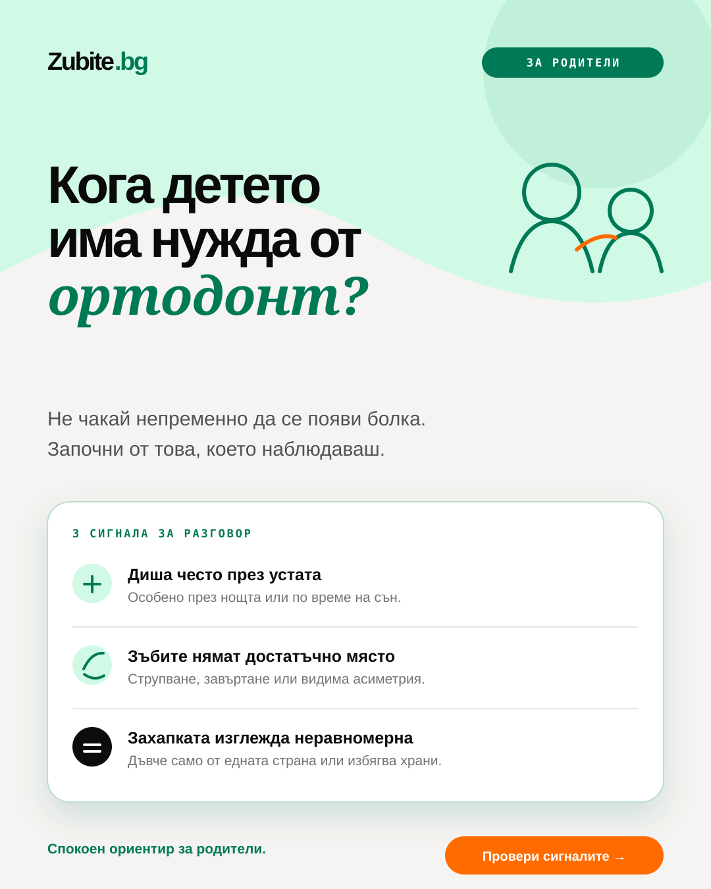
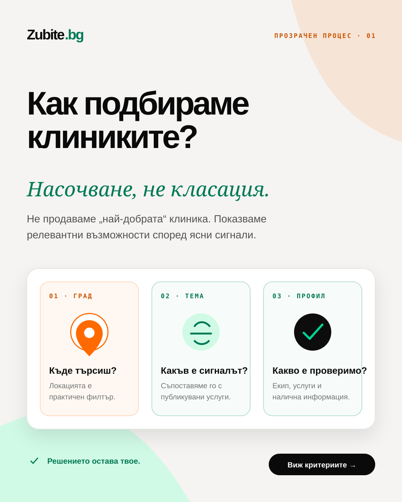
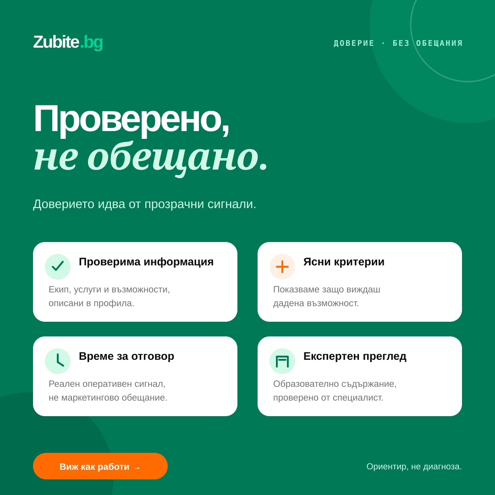
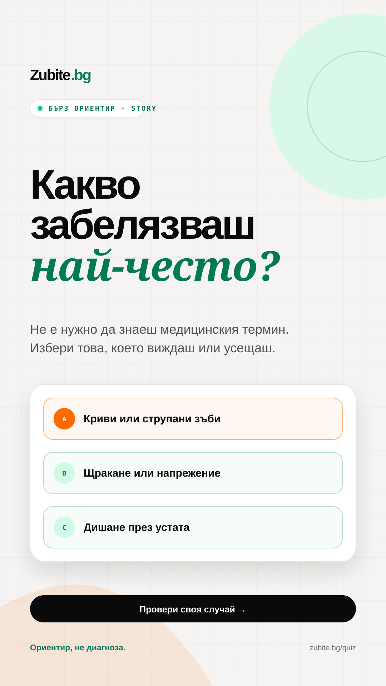
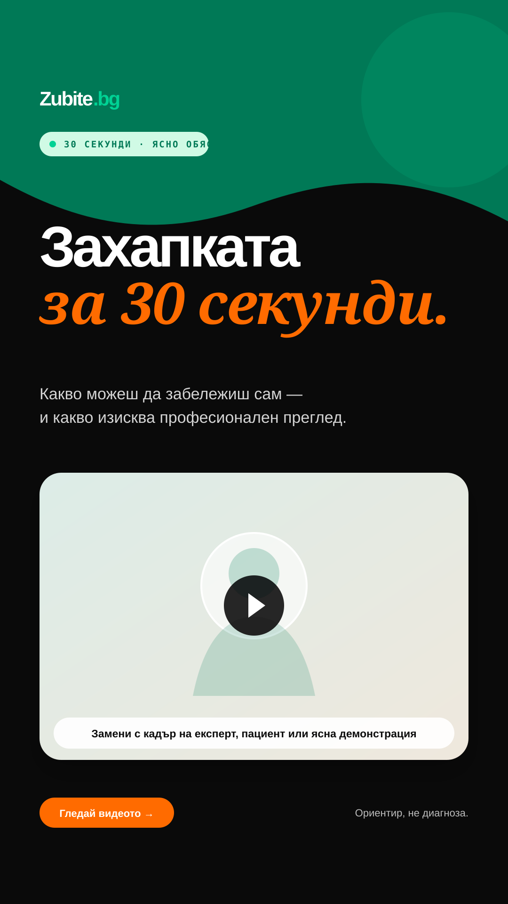
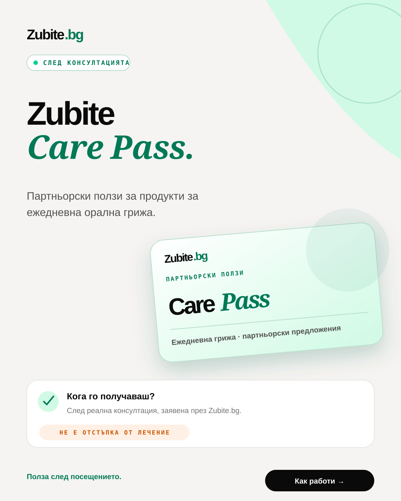
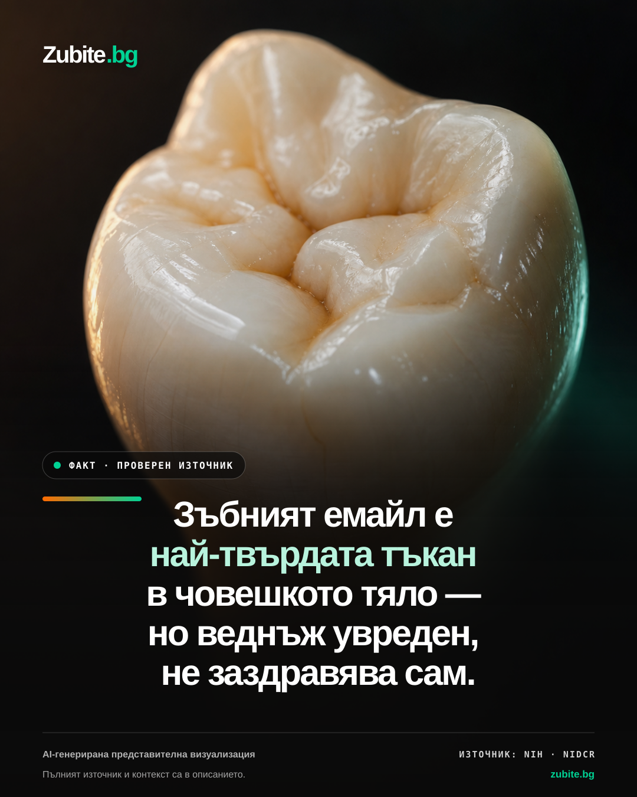
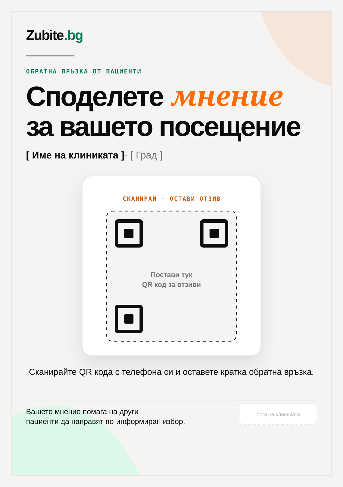

Social system · editable SVG masters
Zubite.bg
The Independent Editorial Guide.
Десет готови шаблона за образователно съдържание, родители, прозрачност, доказателства, Hyperreal Facts, Stories, Reels, Care Pass и печатен A3 постер за отзиви. Всеки SVG остава напълно редактируем.
{kind=link}

{kind=link}

{kind=link}

{kind=link}

{kind=link}

{kind=link}

{kind=link}

08 · 1080×1350
Care Pass explainer
Късна полза в пътя — ясно отделена от лечението и основния CTA.
Изтегли SVG{kind=link}

09 · 1080×1350
Hyperreal Fact
Оригинална AI визуализация, един проверен факт, видим източник и ясна редакционна рамка.
{kind=link}
{kind=link}

10 · A3 print · 297×420mm
Review poster
Печатен постер за приемната: QR код за отзиви и място за логото на клиниката като участник.
Изтегли SVG{kind=link}
Редактиране
Импортирай SVG във Figma, Illustrator или Canva. Инсталирай Manrope, Playfair Display и IBM Plex Mono. Запази SVG като master и експортирай PNG в точния размер.
Правило за доверие
Не добавяй измислени рейтинги, отзиви, числа, медицински твърдения или “най-добра клиника”. Оранжевото води към действие; зеленото доказва и ориентира.